Pincha una imagen para verla a tamaño real. Marca sí/no y pega el veredicto en el chat.
Very wide panoramic abstract technical band on a deep midnight navy background with a faint grid of tiny evenly spaced dots. In the right half, a straight horizontal line of soft white light runs from the centre of the frame to the right edge. A side branch of teal light leaves the main line, makes a large careful loop that fills the right half, and returns to the main line, passing through a bright glowing ring where it rejoins it. The branch and the ring glow strongly and cast a soft teal halo on the dark background. The left half of the frame is a plain, empty dark background with only the faint grid. Style: clean minimal vector-like digital illustration, thin precise strokes, soft glow, flat dark background. Colours: deep midnight navy, teal, pale aqua, soft white. Mood: calm, careful, reliable. The image is completely textless.
Square abstract technical illustration on a deep midnight navy background with a faint grid of tiny evenly spaced dots. In the lower half, a straight horizontal line of soft white light runs across the frame from the left edge to the right edge. A side branch of teal light leaves the main line, makes a large careful loop that hangs below the line and fills the lower half, and returns to the main line, passing through a bright glowing ring where it rejoins it. The branch and the ring glow strongly and cast a soft teal halo on the dark background. The upper half of the frame is a plain, empty dark background with only the faint grid. Style: clean minimal vector-like digital illustration, thin precise strokes, soft glow, flat dark background. Colours: deep midnight navy, teal, pale aqua, soft white. Mood: calm, careful, reliable. The image is completely textless.
Tall vertical abstract technical illustration on a deep midnight navy background with a faint grid of tiny evenly spaced dots. In the lower half, a straight horizontal line of soft white light runs across the frame from the left edge to the right edge. A side branch of teal light leaves the main line, makes a large careful loop that hangs below the line and fills the lower half, and returns to the main line, passing through a bright glowing ring where it rejoins it. The branch and the ring glow strongly and cast a soft teal halo on the dark background. The upper half of the frame is a plain, empty dark background with only the faint grid. Style: clean minimal vector-like digital illustration, thin precise strokes, soft glow, flat dark background. Colours: deep midnight navy, teal, pale aqua, soft white. Mood: calm, careful, reliable. The image is completely textless.
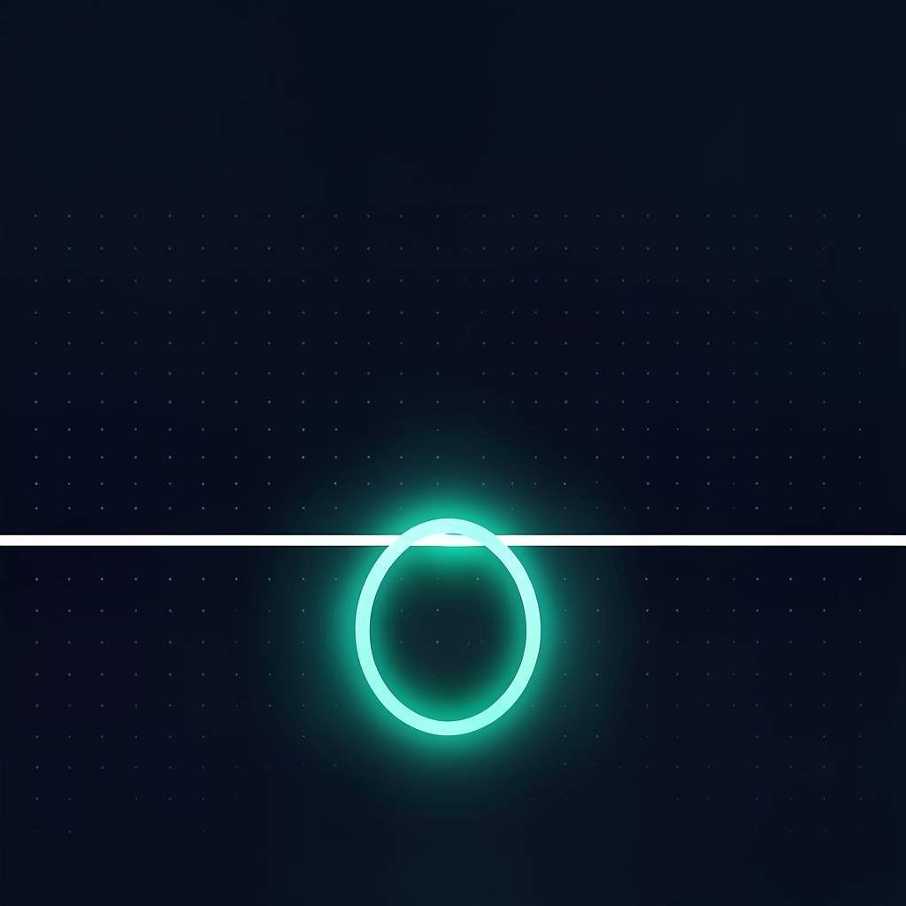
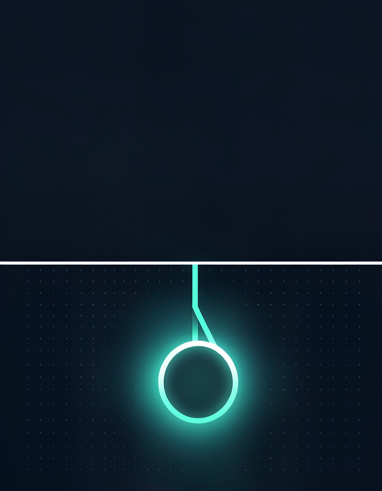
Very wide panoramic abstract band on a deep midnight navy background with a faint grid of tiny evenly spaced dots. In the right half, a row of thin rectangular frames of clear glass floats in the dark, slightly overlapping and receding into depth towards the right edge, each holding a soft blurred glow. One frame near the centre of the row shines brighter than the others with a clear violet light that spills softly onto its neighbours. The left half of the frame is a calm, smooth, dark navy surface, nearly empty and softly out of focus. Style: minimal elegant digital art, smooth gradients, soft volumetric light, crisp glass reflections. Colours: deep midnight navy, violet, soft lavender and white highlights. Mood: calm, focused, quietly creative. The image is completely textless.
Square abstract artwork on a deep midnight navy background with a faint grid of tiny evenly spaced dots. In the lower half, a row of thin rectangular frames of clear glass floats in the dark, slightly overlapping and receding into depth from left to right, each holding a soft blurred glow. One frame near the centre of the row shines brighter than the others with a clear violet light that spills softly onto its neighbours. The upper half of the frame is a calm, smooth, dark navy surface, nearly empty and softly out of focus. Style: minimal elegant digital art, smooth gradients, soft volumetric light, crisp glass reflections. Colours: deep midnight navy, violet, soft lavender and white highlights. Mood: calm, focused, quietly creative. The image is completely textless.
Tall vertical abstract artwork on a deep midnight navy background with a faint grid of tiny evenly spaced dots. In the lower half, a row of thin rectangular frames of clear glass floats in the dark, slightly overlapping and receding into depth from left to right, each holding a soft blurred glow. One frame near the centre of the row shines brighter than the others with a clear violet light that spills softly onto its neighbours. The upper half of the frame is a calm, smooth, dark navy surface, nearly empty and softly out of focus. Style: minimal elegant digital art, smooth gradients, soft volumetric light, crisp glass reflections. Colours: deep midnight navy, violet, soft lavender and white highlights. Mood: calm, focused, quietly creative. The image is completely textless.
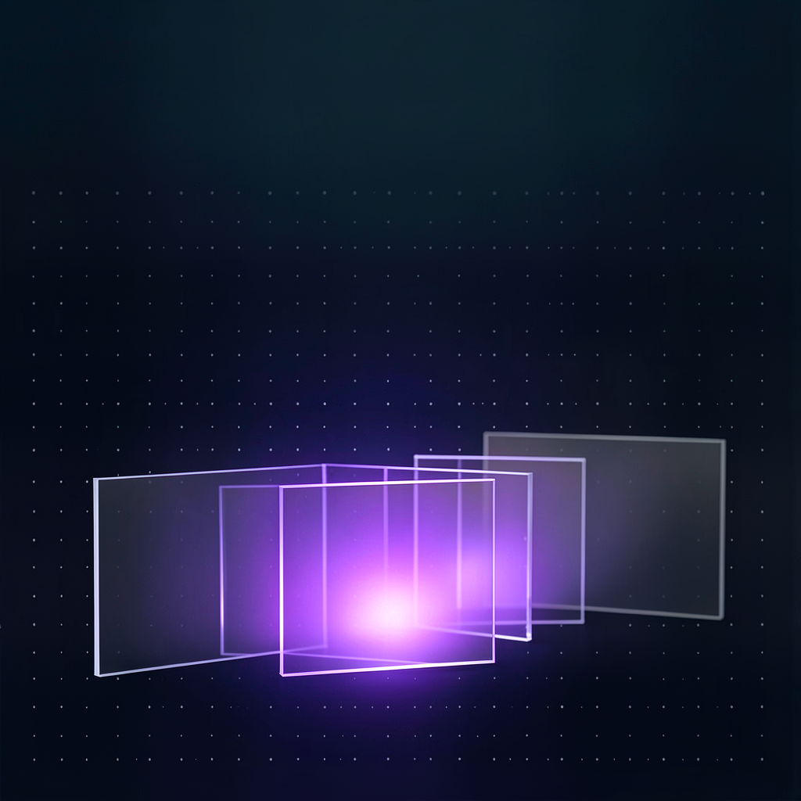
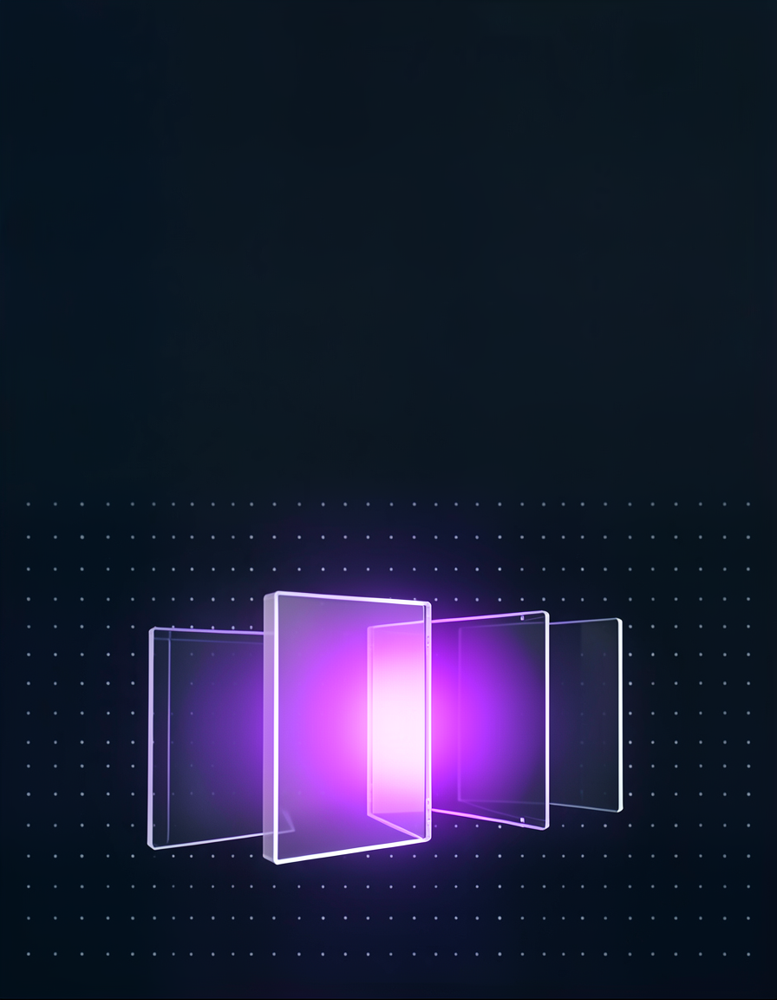
Very wide panoramic abstract band on a deep midnight navy background with a faint grid of tiny evenly spaced dots. In the right half, a single smooth sound-wave ribbon of light flows in from the centre of the frame and curls into a pattern of fine glowing concentric rings made of thin threads of light near the right edge. The ribbon glows in a warm raspberry pink with soft white highlights along its crests. The left half of the frame is a calm, smooth, dark navy surface, nearly empty and softly out of focus. Style: minimal elegant digital art, thin precise luminous lines, soft glow, smooth gradients. Colours: deep midnight navy, raspberry pink, soft rose and white highlights. Mood: calm, warm, attentive. The image is completely textless.
Square abstract artwork on a deep midnight navy background with a faint grid of tiny evenly spaced dots. In the lower half, a single smooth sound-wave ribbon of light flows in from the left edge and curls into a pattern of fine glowing concentric rings made of thin threads of light, centred in the lower half. The ribbon glows in a warm raspberry pink with soft white highlights along its crests. The upper half of the frame is a calm, smooth, dark navy surface, nearly empty and softly out of focus. Style: minimal elegant digital art, thin precise luminous lines, soft glow, smooth gradients. Colours: deep midnight navy, raspberry pink, soft rose and white highlights. Mood: calm, warm, attentive. The image is completely textless.
Tall vertical abstract artwork on a deep midnight navy background with a faint grid of tiny evenly spaced dots. In the lower half, a single smooth sound-wave ribbon of light flows in from the left edge and curls into a pattern of fine glowing concentric rings made of thin threads of light, centred in the lower half. The ribbon glows in a warm raspberry pink with soft white highlights along its crests. The upper half of the frame is a calm, smooth, dark navy surface, nearly empty and softly out of focus. Style: minimal elegant digital art, thin precise luminous lines, soft glow, smooth gradients. Colours: deep midnight navy, raspberry pink, soft rose and white highlights. Mood: calm, warm, attentive. The image is completely textless.
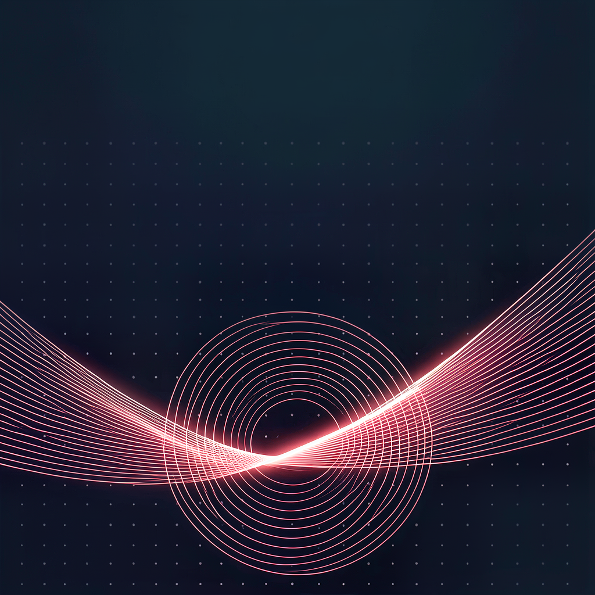
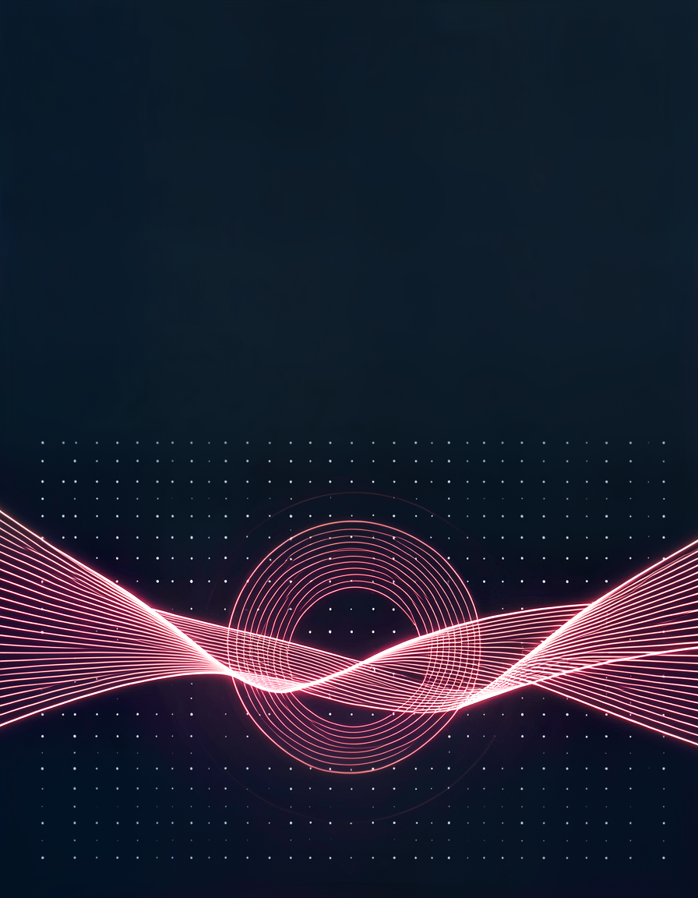
Very wide panoramic abstract technical band on a deep dark navy background with a faint fine grid. In the right half, several thin glowing lines of light run from the centre of the frame to the right edge, splitting apart and merging again, each joint marked by a small round node. A short bright dash of light travels from the end of one line into the start of the next one at a bright meeting node. The lines glow in sky blue, with a few nodes in warm amber and soft green. The left half of the frame is a plain, empty dark background with only the faint grid. Style: clean minimal vector-like digital illustration, thin precise strokes, soft glow, flat dark background. Colours: deep navy, sky blue, amber, soft green, off-white. Mood: calm, precise, trustworthy. The image is completely textless.
Square abstract technical illustration on a deep dark navy background with a faint fine grid. In the lower half, several thin glowing lines of light run across the frame from the left edge to the right edge, splitting apart and merging again, each joint marked by a small round node. A short bright dash of light travels from the end of one line into the start of the next one at a bright meeting node. The lines glow in sky blue, with a few nodes in warm amber and soft green. The upper half of the frame is a plain, empty dark background with only the faint grid. Style: clean minimal vector-like digital illustration, thin precise strokes, soft glow, flat dark background. Colours: deep navy, sky blue, amber, soft green, off-white. Mood: calm, precise, trustworthy. The image is completely textless.
Tall vertical abstract technical illustration on a deep dark navy background with a faint fine grid. In the lower half, several thin glowing lines of light run across the frame from the left edge to the right edge, splitting apart and merging again, each joint marked by a small round node. A short bright dash of light travels from the end of one line into the start of the next one at a bright meeting node. The lines glow in sky blue, with a few nodes in warm amber and soft green. The upper half of the frame is a plain, empty dark background with only the faint grid. Style: clean minimal vector-like digital illustration, thin precise strokes, soft glow, flat dark background. Colours: deep navy, sky blue, amber, soft green, off-white. Mood: calm, precise, trustworthy. The image is completely textless.
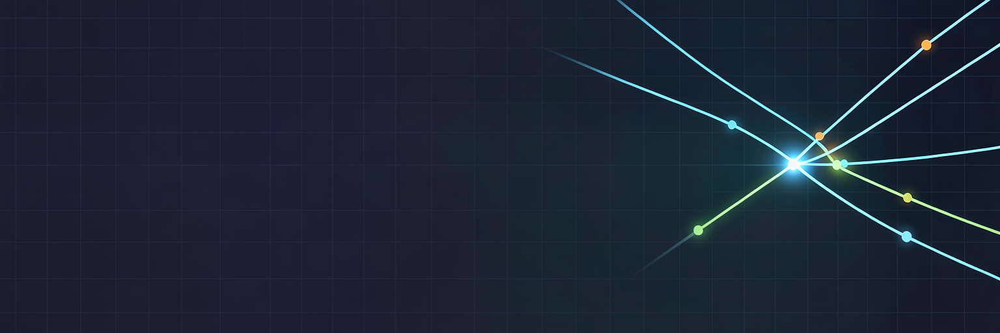
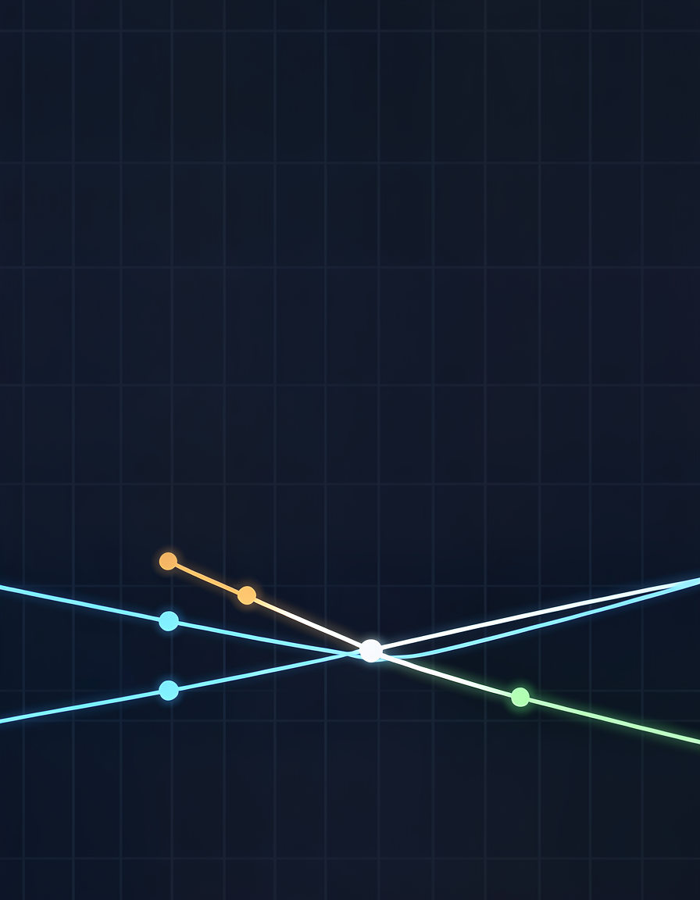
Very wide panoramic abstract band on a background in the colour #06121c. In the right third, a tall open threshold with softly rounded corners stands in the dark, and clear light in the colour #1aa6df pours out through it, spreading across a smooth floor in the colour #06121c in gentle soft ripples towards the right edge and rising into a soft radial glow of #5cc8f2 that stays close to the threshold. Three small soft points of light hover just inside the threshold: one in #E0703A, one in #2F7A55 and one in #3D6FD9. A faint grid of tiny evenly spaced dots covers the whole background and fades softly into the darkness. The left two thirds of the frame are a calm, smooth surface in #06121c, nearly empty and softly out of focus. Style: minimal elegant digital art, smooth gradients, soft volumetric light, crisp and clean. Colours: #06121c, #1aa6df, #5cc8f2 and #ffffff highlights. Mood: calm, honest, quietly ambitious. The image is completely textless.
Square abstract artwork on a background in the colour #06121c. In the lower half, a tall open threshold with softly rounded corners stands in the dark, and clear light in the colour #1aa6df pours out through it, spreading across a smooth floor in the colour #06121c in gentle soft ripples towards the bottom edge and rising into a soft radial glow of #5cc8f2 that stays low around the threshold. Three small soft points of light hover just inside the threshold: one in #E0703A, one in #2F7A55 and one in #3D6FD9. A faint grid of tiny evenly spaced dots covers the whole background and fades softly into the darkness. The upper half of the frame is a calm, smooth surface in #06121c, nearly empty and softly out of focus. Style: minimal elegant digital art, smooth gradients, soft volumetric light, crisp and clean. Colours: #06121c, #1aa6df, #5cc8f2 and #ffffff highlights. Mood: calm, honest, quietly ambitious. The image is completely textless.
Tall vertical abstract artwork on a background in the colour #06121c. In the lower half, a tall open threshold with softly rounded corners stands in the dark, and clear light in the colour #1aa6df pours out through it, spreading across a smooth floor in the colour #06121c in gentle soft ripples towards the bottom edge and rising into a soft radial glow of #5cc8f2 that stays low around the threshold. Three small soft points of light hover just inside the threshold: one in #E0703A, one in #2F7A55 and one in #3D6FD9. A faint grid of tiny evenly spaced dots covers the whole background and fades softly into the darkness. The upper half of the frame is a calm, smooth surface in #06121c, nearly empty and softly out of focus. Style: minimal elegant digital art, smooth gradients, soft volumetric light, crisp and clean. Colours: #06121c, #1aa6df, #5cc8f2 and #ffffff highlights. Mood: calm, honest, quietly ambitious. The image is completely textless.
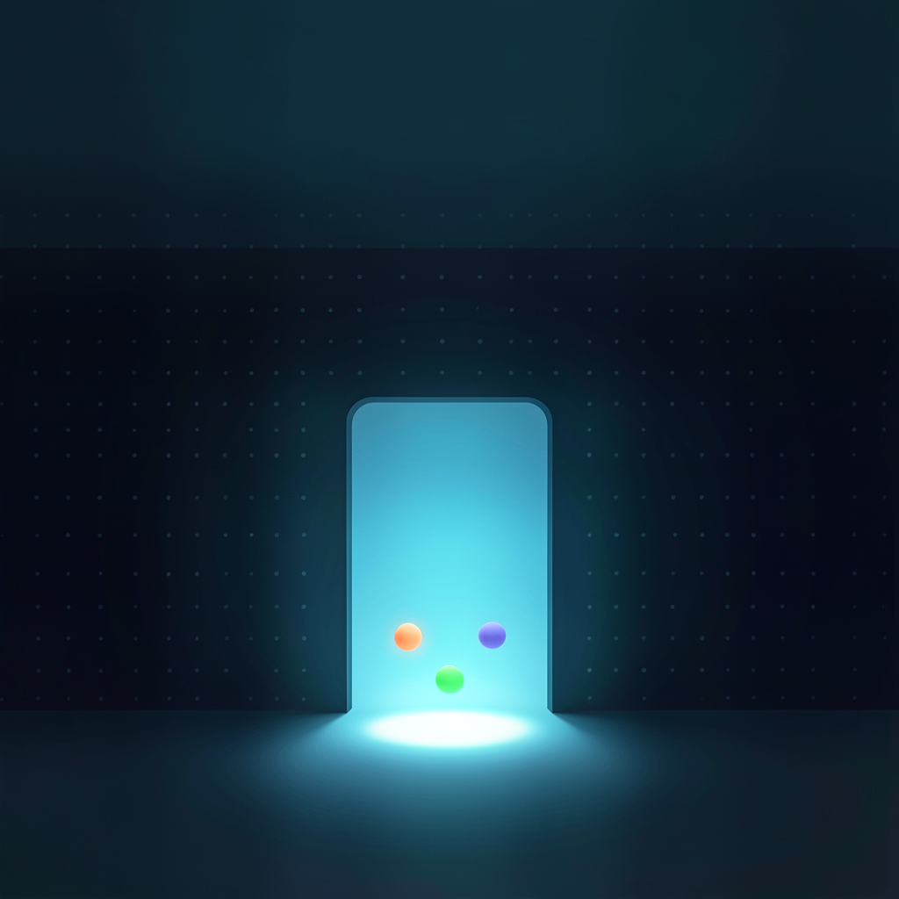
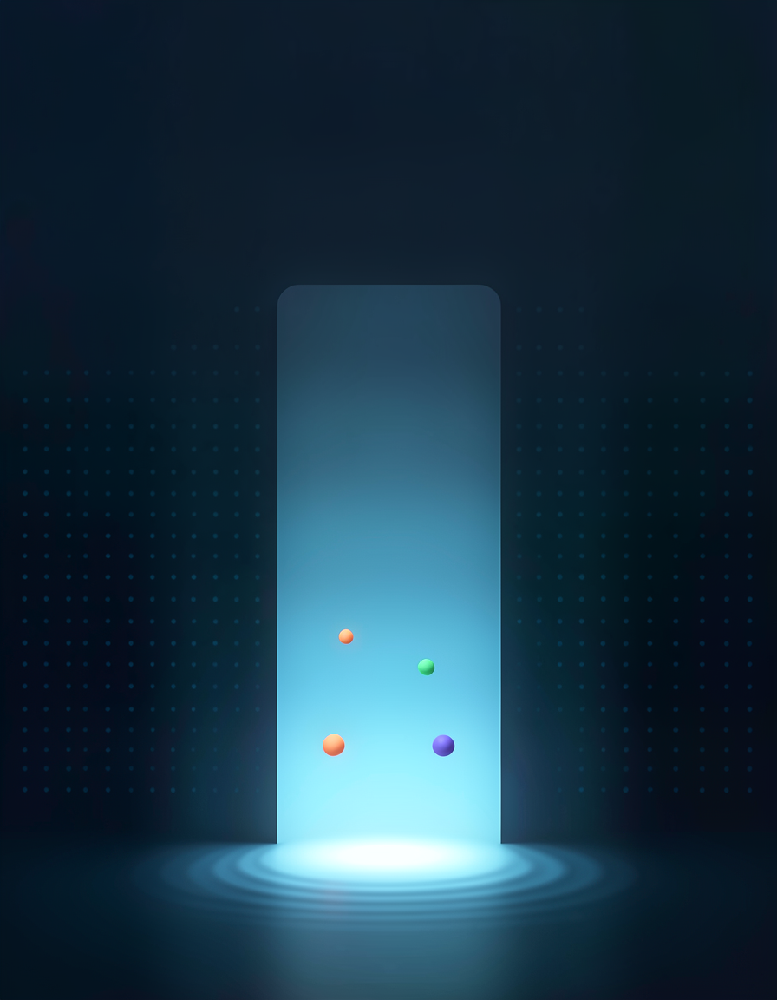
Very wide panoramic cinematic landscape photograph of a wild fantasy plain at first light, grounded and natural, with muted colours and a single warm accent. The left half of the frame is a calm, open stretch of plain under soft morning haze in the colour #8a9aa8, flat and quiet, under a pale washed sky in #f1e4d0. In the right half, a cluster of tall slender needles of rock in the colour #221c16 rises from low ridges of sand in #332415, each needle leaning slightly, their tips catching the first low sun in #E0703A while their bases stay in cool shadow. A thin thread of smoke rises far away between the needles, and a small weathered banner of rough cloth hangs from a wooden pole on the nearest ridge. The sky is a pale washed #f1e4d0 with a soft band of haze near the horizon. Style: cinematic landscape photograph, natural muted colours, subtle filmic grade, fine detail. Colours: #E0703A, #221c16, #f1e4d0, #8a9aa8. Mood: wild, quiet, lived-in. The image is completely textless.
Square cinematic landscape photograph of a wild fantasy plain at first light, grounded and natural, with muted colours and a single warm accent. In the upper two thirds of the frame, a cluster of tall slender needles of rock in the colour #221c16 rises from low ridges of sand in #332415 against a pale washed sky in #f1e4d0 with a soft band of haze near the horizon, each needle leaning slightly, their tips catching the first low sun in #E0703A while their bases stay in cool shadow. A thin thread of smoke rises far away between the needles, and a small weathered banner of rough cloth hangs from a wooden pole on the nearest ridge. The lower third of the frame is a calm, open stretch of plain under soft morning haze in the colour #8a9aa8, flat and quiet. Style: cinematic landscape photograph, natural muted colours, subtle filmic grade, fine detail. Colours: #E0703A, #221c16, #f1e4d0, #8a9aa8. Mood: wild, quiet, lived-in. The image is completely textless.
Cinematic landscape photograph of a wild fantasy plain in the last minutes before sunrise, grounded and natural, with deep muted colours and a single warm accent. The whole scene sits in low cool light, the air clear and the shadows deep. The left third of the frame is a calm, open stretch of plain in the colour #52626f, flat and quiet, under a thin layer of cool mist close to the ground. In the right two thirds, a cluster of tall slender needles of rock in the colour #221c16 rises from low ridges of sand in #332415, each needle leaning slightly, their tips glowing in a strong warm #E0703A from the first low sun while their bases stay in deep cool shadow. A thin thread of smoke rises far away between the needles, and a small weathered banner of rough cloth hangs from a wooden pole on the nearest ridge. The sky is a deep dusky blue-grey in #52626f, darker towards the top, with a narrow warm band of #E0703A low on the horizon. Style: cinematic landscape photograph, deep natural colours, rich filmic grade, fine detail. Colours: #E0703A, #221c16, #332415, #52626f. Mood: wild, quiet, lived-in. The image is completely textless.
Tall vertical cinematic landscape photograph of a wild fantasy plain at first light, grounded and natural, with muted colours and a single warm accent. In the upper two thirds of the frame, a cluster of tall slender needles of rock in the colour #221c16 rises from low ridges of sand in #332415 against a pale washed sky in #f1e4d0 with a soft band of haze near the horizon, each needle leaning slightly, their tips catching the first low sun in #E0703A while their bases stay in cool shadow. A thin thread of smoke rises far away between the needles, and a small weathered banner of rough cloth hangs from a wooden pole on the nearest ridge. The lower third of the frame is a calm, open stretch of plain under soft morning haze in the colour #8a9aa8, flat and quiet. Style: cinematic landscape photograph, natural muted colours, subtle filmic grade, fine detail. Colours: #E0703A, #221c16, #f1e4d0, #8a9aa8. Mood: wild, quiet, lived-in. The image is completely textless.
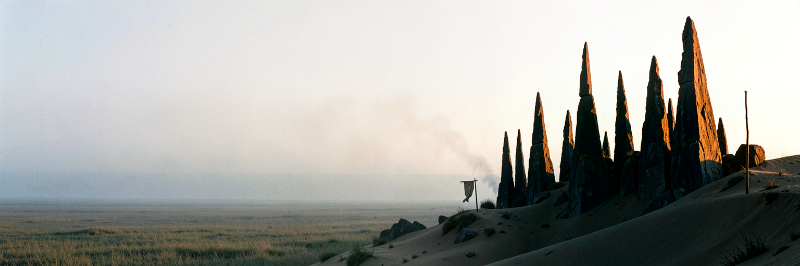
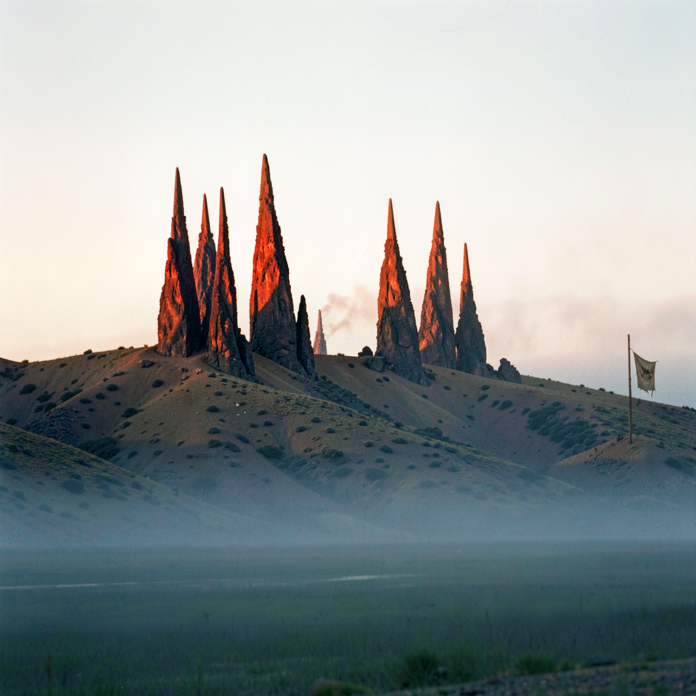
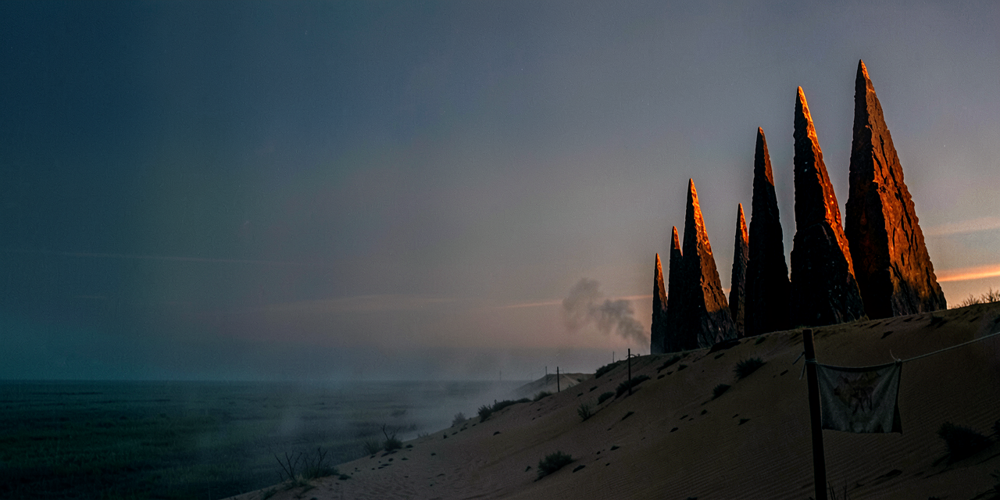
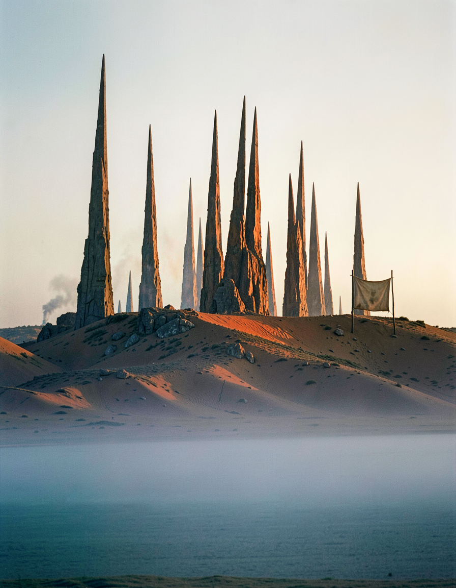
Very wide panoramic abstract conceptual band on warm unbleached cotton paper. In the right third of the frame two watercolour inks meet and keep their own colour where they touch: an ink of dried oxblood flows in from the bottom edge and an ink of deep moss in shade flows in from the right edge. Where they meet, a band of fine intermediate veins appears in warm resin amber and dusty earth tones, with organic pigment texture soaking into the paper fibres. The band is the protagonist: rich in nuance, between the oxblood and the moss, and it stays inside the right third. The left two thirds of the frame are calm, bare unbleached cotton paper with a soft natural grain. Flat even daylight and a printed fine art finish. Style: editorial watercolour on paper, delicate and contemplative, soft muted colours. Materials and light: unbleached cotton paper, dried oxblood ink, shaded moss green ink, warm resin amber, flat daylight. Mood: serene, thoughtful, balanced. The image is completely textless.
Square abstract conceptual artwork on warm unbleached cotton paper. Two watercolour inks meet across the lower half of the frame and keep their own colour where they touch: an ink of dried oxblood flows in from the lower left corner and an ink of deep moss in shade flows in from the lower right corner. Where they meet in the lower centre, a wide band of fine intermediate veins appears in warm resin amber and dusty earth tones, with organic pigment texture soaking into the paper fibres. The central band is the protagonist: wide, rich in nuance, between the oxblood and the moss. The upper half of the frame is calm, bare unbleached cotton paper with a soft natural grain. Flat even daylight and a printed fine art finish. Style: editorial watercolour on paper, delicate and contemplative, soft muted colours. Materials and light: unbleached cotton paper, dried oxblood ink, shaded moss green ink, warm resin amber, flat daylight. Mood: serene, thoughtful, balanced. The image is completely textless.
Tall vertical abstract conceptual artwork on warm unbleached cotton paper. Two watercolour inks meet across the lower half of the frame and keep their own colour where they touch: an ink of dried oxblood flows in from the lower left corner and an ink of deep moss in shade flows in from the lower right corner. Where they meet in the lower centre, a wide band of fine intermediate veins appears in warm resin amber and dusty earth tones, with organic pigment texture soaking into the paper fibres. The central band is the protagonist: wide, rich in nuance, between the oxblood and the moss. The upper half of the frame is calm, bare unbleached cotton paper with a soft natural grain. Flat even daylight and a printed fine art finish. Style: editorial watercolour on paper, delicate and contemplative, soft muted colours. Materials and light: unbleached cotton paper, dried oxblood ink, shaded moss green ink, warm resin amber, flat daylight. Mood: serene, thoughtful, balanced. The image is completely textless.
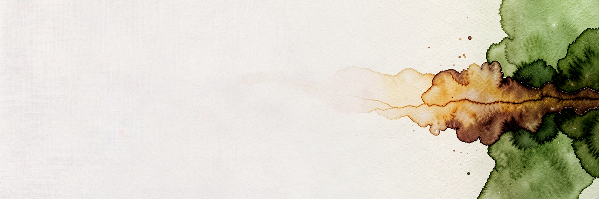
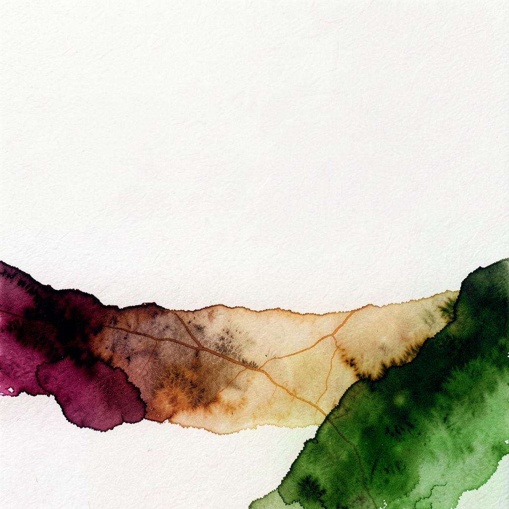
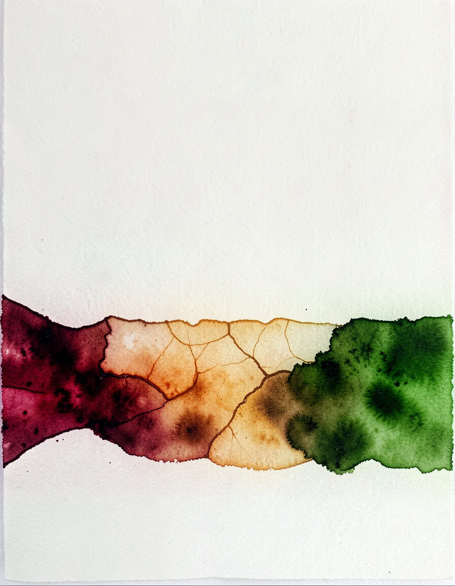